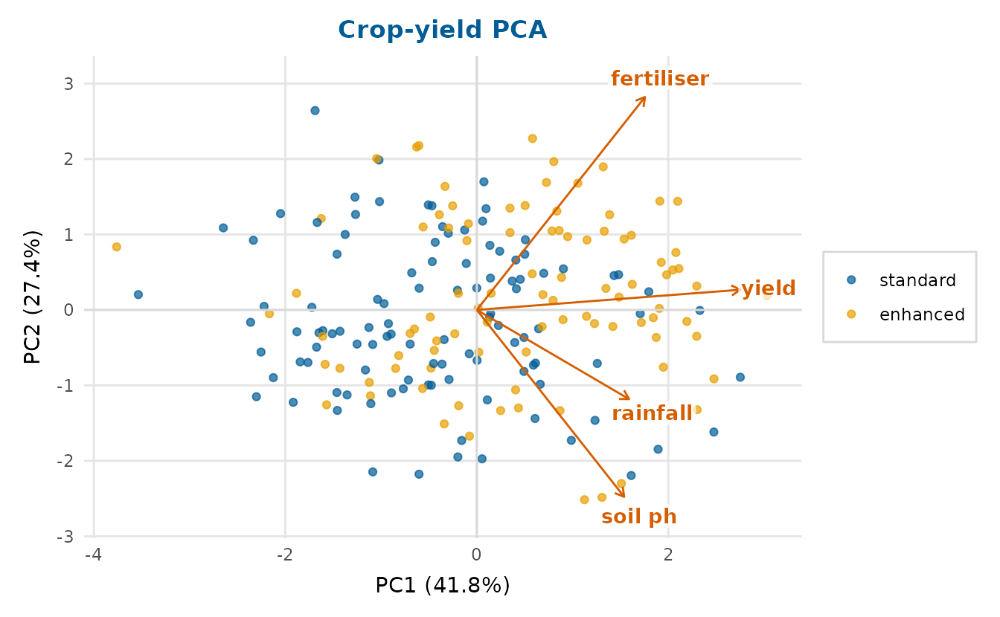
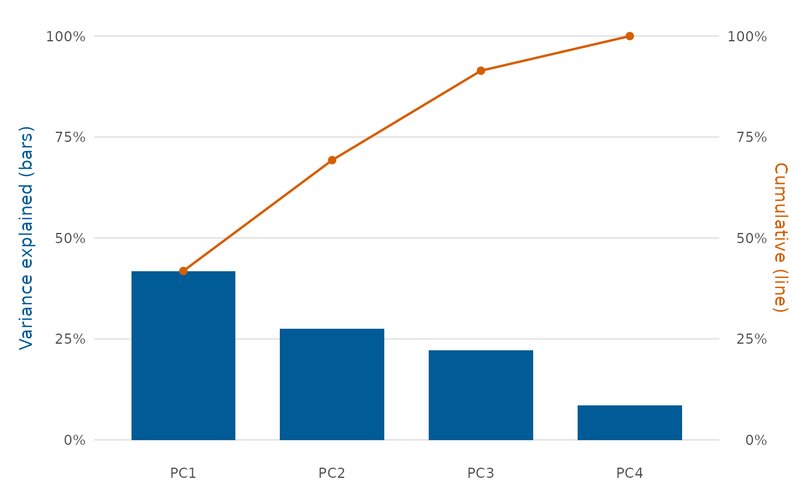
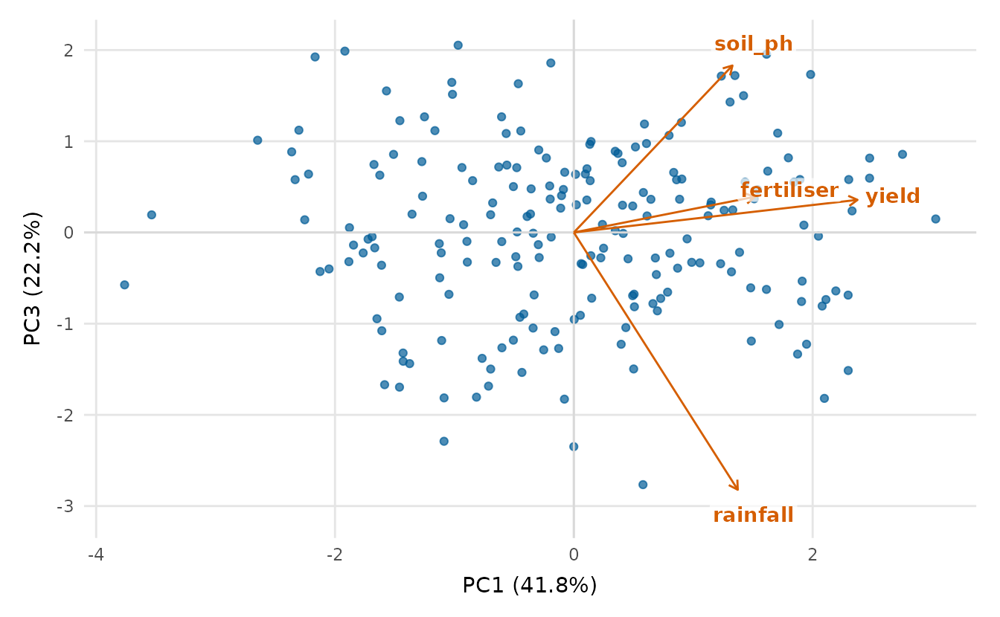
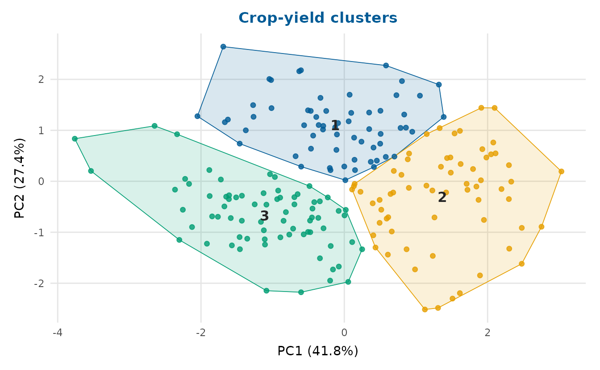
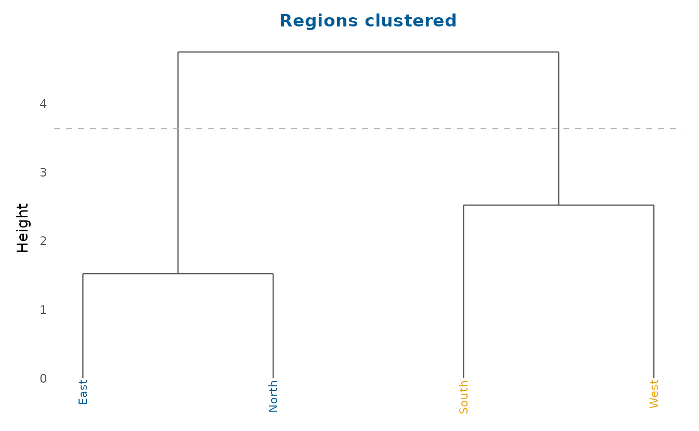
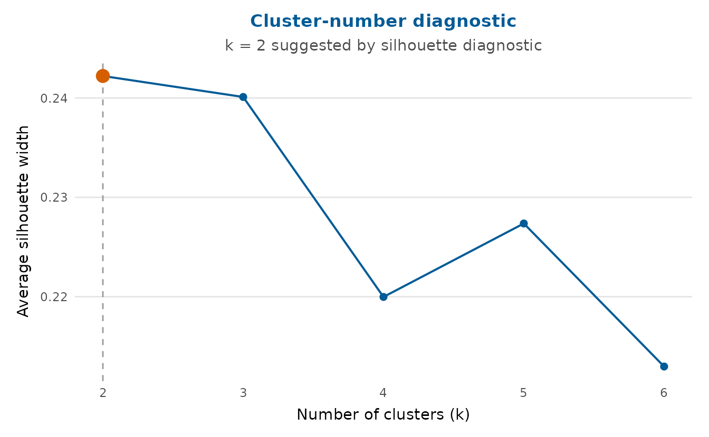
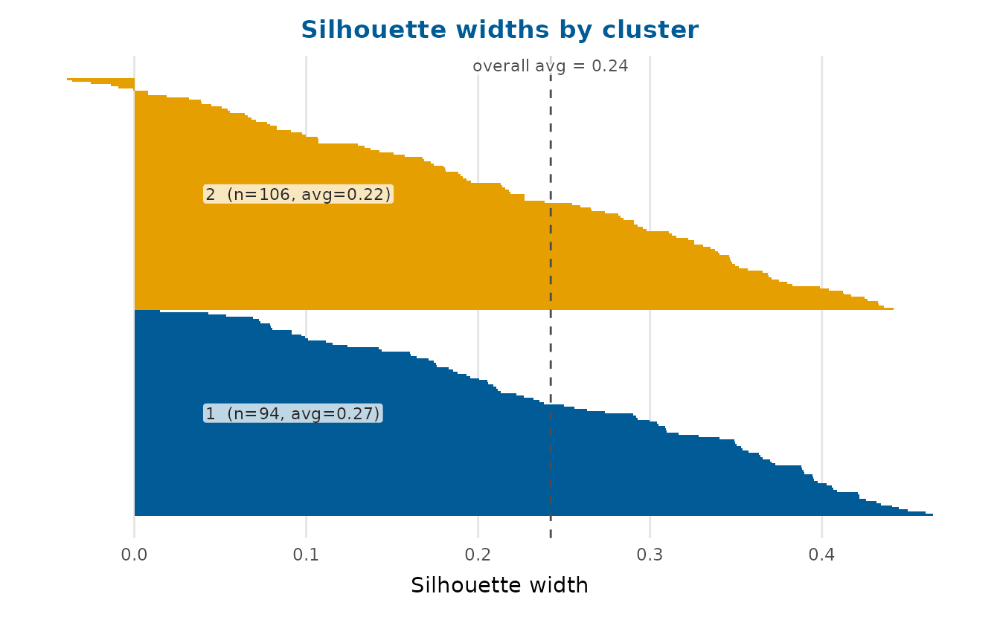
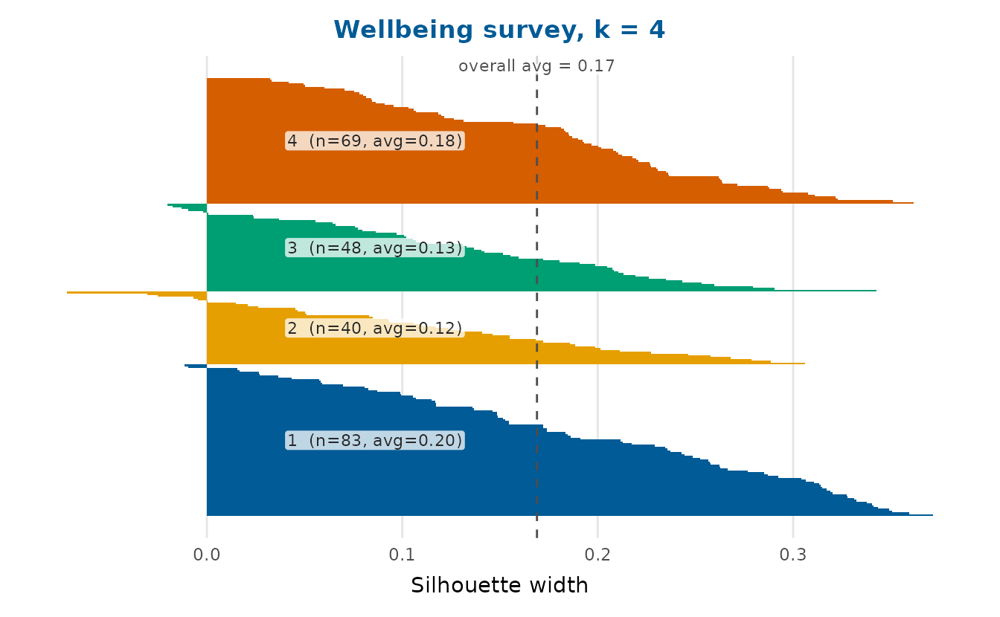
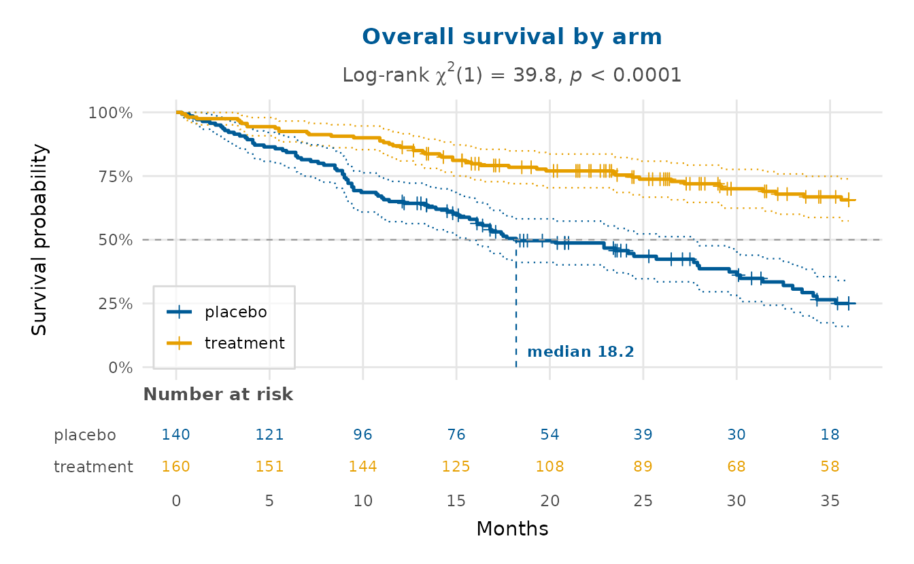

Multivariate analysis and survival
Source:vignettes/multivariate-and-survival.Rmd
multivariate-and-survival.RmdBeyond regression, depictr covers three staples of applied data analysis: principal component analysis, clustering (with quality diagnostics) and survival curves.
Principal component analysis
pca_plot() runs a PCA on the numeric columns of a data
frame and draws a biplot: the observations projected onto two
components, with the variable loadings as arrows.
scree_plot() shows how much variance each component
explains.
num <- c("rainfall", "fertiliser", "soil_ph", "yield")
pca_plot(crop_yield, cols = num, group = "treatment",
title = "Crop-yield PCA")
scree_plot(crop_yield, cols = num)
Both functions also accept a ready-made prcomp() object,
so you can analyse once and plot several views:

Clustering
cluster_plot() runs k-means and shows the clusters on
the first two principal components (so it works for any number of
variables), with convex hulls and labelled centroids.
dendrogram_plot() draws a hierarchical-clustering tree and
can cut it into k groups.
cluster_plot(crop_yield, cols = num, k = 3, seed = 1,
title = "Crop-yield clusters")
region_means <- aggregate(
cbind(stress, sleep_hours, life_satisfaction, age, income) ~ region,
data = wellbeing_survey, FUN = mean
)
rownames(region_means) <- region_means$region
dendrogram_plot(region_means[-1], k = 2, title = "Regions clustered")
How many clusters? Quality diagnostics
Choosing k should not be guesswork.
k_diagnostic() evaluates a cluster-quality criterion across
a range of k and suggests a value – by the average
silhouette width (the default, after Rousseeuw, 1987), the
within-sum-of-squares elbow, or the gap statistic (Tibshirani, Walther
& Hastie, 2001). See ?k_diagnostic for the
references.
kd <- k_diagnostic(crop_yield, k_range = 2:6, cols = num,
method = "silhouette")
kd # the diagnostic curve, with the suggested k marked
The suggested k and the underlying table are attached as
attributes:
| k | avg_silhouette |
|---|---|
| 2 | 0.242 |
| 3 | 0.240 |
| 4 | 0.220 |
| 5 | 0.230 |
| 6 | 0.221 |
silhouette_plot() then shows the quality of an actual
clustering, one bar per observation grouped by cluster, with the average
silhouette width per cluster and overall (the dashed line). Wide
positive bars are well-placed observations; negative bars may belong to
a neighbouring cluster.
cl <- kmeans(scale(crop_yield[num]), centers = attr(kd, "suggested"),
nstart = 10)$cluster
silhouette_plot(crop_yield, cl, cols = num,
title = "Silhouette widths by cluster")
The same diagnostics apply to the wellbeing survey’s numeric profile:
wb_num <- c("age", "income", "stress", "sleep_hours",
"exercise_days", "life_satisfaction")
wkd <- k_diagnostic(wellbeing_survey, k_range = 2:6, cols = wb_num,
method = "wss")
wcl <- kmeans(scale(na.omit(wellbeing_survey[wb_num])),
centers = attr(wkd, "suggested"), nstart = 10)$cluster
silhouette_plot(na.omit(wellbeing_survey[wb_num]), wcl,
title = sprintf("Wellbeing survey, k = %d", attr(wkd, "suggested")))
Survival curves
survival_plot() draws Kaplan-Meier curves (Kaplan & Meier,
1958) with stepwise confidence limits from Greenwood’s
formula (Greenwood,
1926) and censoring marks. The estimate is computed in base
R, so no modelling package is needed; you can pass follow-up times and
an event indicator directly, a data frame, or a
survival::survfit object.
The clinical_trial dataset has two arms with a real
survival difference – the treatment arm has a lower hazard – so the
curves separate. Turning on the three publication annotations gives a
survminer-style figure: a number-at-risk table beneath
the curves, dashed guides to each arm’s median
survival, and the log-rank test of the
difference as a subtitle. A survival curve is monotone-decreasing, so
its bottom-left corner is always empty –
legend_inside = TRUE puts the group legend there.
survival_plot(
clinical_trial$time, clinical_trial$event, group = clinical_trial$arm,
risk_table = TRUE, median_line = TRUE, logrank = TRUE, legend_inside = TRUE,
x_lab = "Months", title = "Overall survival by arm"
)
The log-rank p-value is tiny and the median survival is clearly longer in the treatment arm – and because its event times are longer, that arm is more often right-censored at the 36-month study end, visible as the denser run of censoring marks.